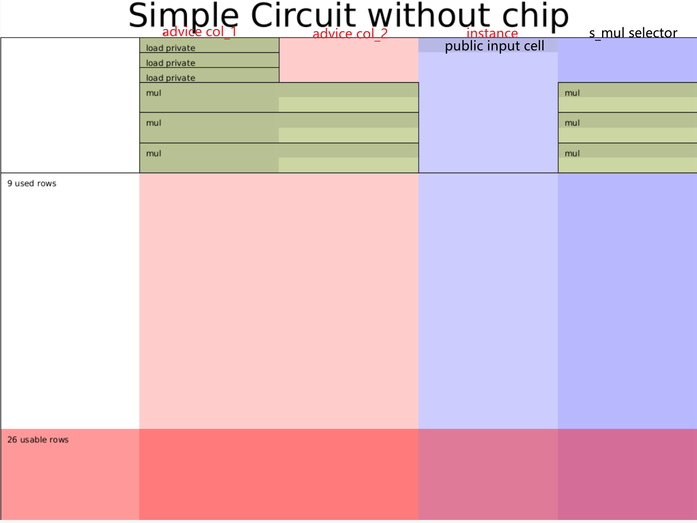

- 作者: @Po@Ethstorage.io / @Demian
- 时间: 2023-10-18
- 校对: @Po@Ethstorage.io / @Demian
Halo2 API 简介
Overview
上节我们介绍了Halo2的核心概念，本节则以 这个电路为例，来说明如何使用 Halo2 API来写电路。 该电路的各个参数说明如下：
private inputs: a, b, c
public inputs : out
constraints : a^2 * b^2 * c = out
我们的目的是写一个电路，让Prover证明对于公共输入out,他知道三个秘密输入a, b, c满足 这个约束。
从电路的角度，只使用 乘法门 和 乘法选择器，上述约束可以算数化为:
| instance | advice_0 | advice_1 | selector_mul |
|---|---|---|---|
| out | a | ||
| b | |||
| c | |||
| a | b | 1 | |
| ab | 0 | ||
| ab | ab | 1 | |
| absq | 0 | ||
| absq | c | 1 | |
| out | 0 |
看到这里可能会产生疑问，这个 table 是如何填写出来的呢？其实，这个填写规则是与门约束一一对应的，而门约束可以很随意设计，所以关键是得确定
- 有几种门约束
- 每种门约束涉及哪几个单元格及多项式约束公式 absq 即 ab 的平方。
我们的目的则是：
- 利用 Halo2 定义好上述约束 (gates 和 equality constrains)，
- 并使用其 private value 填好上述表格 (即 assign witness)。
使用 Halo2 编写电路，需要为 struct MyCircuit 实现 halo2_proofs::plonk::Circuit trait, 其中包括以下 3 个关联方法: 1
without_witnesses: 创建默认无需 witness 的 Circuit 实例configure: 需要自定义:- 电路配置:
- advice cols (即 witness，包含 private inputs 和 trace),
- instance cols (Public Inputs)
- selector (电路选择器)
- custom gate 约束
- 电路配置:
synthesize: 需要根据上述表格实现填充 witness 的逻辑，即按照验证程序的逻辑正确写入将数据写入表格的每个 Cell:- 填充以 Region 为基本单位(多行+多列构成的矩形)，可以在 region 中以相对引用的方式引用其他Row
- 有两种填充方式: copy_advice (还会产生 equality 约束) + assign_advice(不会产生 equality 约束)
一旦定义好上述 3 个关联方法，Halo2 便可以在电路实例化后调用相关 API 自动运行(不需要手动触发上述函数)上述逻辑来填充 witness 和生成 proof。
创建电路和 Config
根据电路构建所需模块，首先需要确定电路配置，上述电路一共需要四列: 2
- 2 列 witness(advice) 用来填充上述表格的
a0和a1列，- 其中 3 个 Private inputs:
a,b和c填入a0列的前三行。
- 其中 3 个 Private inputs:
- 1 列 instance (填入公共输出 out),
- 1 列乘法门选择器(s_mul);
#![allow(unused)] fn main() { #[derive(Debug, Clone)] struct CircuitConfig { advice: [Column<Advice>;2], instance: Column<Instance>, s_mul: Selector, } #[derive(Default)] struct MyCircuit<F:Field> { c: F, a: Value<F>, b: Value<F> } }
实现 Circuit trait 的前两个关联方法
根据电路配置以及我们只需要乘法门，来实现configure 方法：
#![allow(unused)] fn main() { impl <F:Field> Circuit<F> for MyCircuit<F> { fn without_witnesses(&self) -> Self { Self::default() } fn configure(meta: &mut ConstraintSystem<F>) -> Self::Config { let advice = [meta.advice_column(),meta.advice_column()]; let instance = meta.instance_column(); meta.enable_equality(instance); for c in &advice { meta.enable_equality(*c); } let s_mul = meta.selector(); /* Gate design: | a0 | a1 | s_mul| |----|----|------| |lhs |rhs |s_mul | |out | | | */ meta.create_gate("mul_gate", |meta| { let lhs = meta.query_advice(advice[0], Rotation::cur()); let rhs = meta.query_advice(advice[1], Rotation::cur()); let out = meta.query_advice(advice[0], Rotation::next()); let s_mul = meta.query_selector(s_mul); vec![s_mul * (lhs*rhs - out)] }); CircuitConfig { advice, instance, s_mul } } } }
需要注意的是 Halo2 中为了优化需要通过 enable_equality 明确指定哪些列设置 equality 约束。同时由于要保证 gate 对每一行的 witness 都满足约束，所以只能通过 query_advice 来获取每个门虚拟的输入和输出(实际的值在 synthesize 时填入)以生成多项式约束，即保证 gate 返回的 vec 为 0。
实现 witness 填充
按照表格,一步步填充 witness：
- load private inputs
a,b和c - 分别计算三个乘法的输入输出值 (
ab,absq,out)，并通过assign_advice和copy_advice这两个 API 填充 Cell - 通过
constrain_instanceAPI, 约束 out 所在的 Cell 和 instance 列的第一个 cell 相等
#![allow(unused)] fn main() { fn load_private<F:Field>( config: &CircuitConfig, mut layouter: impl Layouter<F>, value: Value<F>) -> Result<Number<F>, Error> { layouter.assign_region( || "load private", |mut region| { region.assign_advice( || "private input", config.advice[0], 0, || value ).map(Number) }) } fn load_constant<F:Field>( config: &CircuitConfig, mut layouter: impl Layouter<F>, c: F ) -> Result<Number<F>, Error> { layouter.assign_region( || "load private", |mut region| { region.assign_advice_from_constant( || "private input", config.advice[0], 0, c ).map(Number) }) } fn mul<F:Field>( config: &CircuitConfig, mut layouter: impl Layouter<F>, a: Number<F>, b: Number<F>, ) -> Result<Number<F>, Error> { layouter.assign_region( || "mul", |mut region| { config.s_mul.enable(&mut region, 0)?; a.0.copy_advice(|| "lhs", &mut region, config.advice[0], 0)?; b.0.copy_advice(|| "rhs", &mut region, config.advice[1], 0)?; let value = a.0.value().copied() * b.0.value().copied(); region.assign_advice(|| "out=lhs*rhs", config.advice[0], 1, || value) .map(Number) }) } impl <F:Field> Circuit<F> for MyCircuit<F> { //... fn synthesize(&self, config: Self::Config, mut layouter: impl Layouter<F>) -> Result<(), Error> { let a = load_private(&config,layouter.namespace(|| "load a"), self.a)?; let b = load_private(&config,layouter.namespace(|| "load b"), self.b)?; let c = load_constant(&config,layouter.namespace(|| "load c"), self.c)?; let ab = mul(&config,layouter.namespace(|| "a*b"), a, b)?; let absq = mul(&config,layouter.namespace(|| "ab*ab"), ab.clone(), ab)?; let out = mul(&config, layouter.namespace(|| "absq*c"), absq, c)?; //expose public layouter.namespace(|| "expose out").constrain_instance(out.0.cell(), config.instance, 0) } } }
Mock prove
最后实例化电路，并调用相应的Mock Prover来验证:
#![allow(unused)] fn main() { #[cfg(test)] mod tests { use halo2_proofs::{dev::MockProver, pasta::Fp}; use super::*; #[test] fn test_simple() { // ANCHOR: test-circuit // The number of rows in our circuit cannot exceed 2^k. Since our example // circuit is very small, we can pick a very small value here. let k = 5; // Prepare the private and public inputs to the circuit! let c = Fp::from(2); let a = Fp::from(2); let b = Fp::from(3); let out = c * a.square() * b.square(); println!("out=:{:?}",out); // Instantiate the circuit with the private inputs. let circuit = MyCircuit { c, a: Value::known(a), b: Value::known(b), }; // Arrange the public input. We expose the multiplication result in row 0 // of the instance column, so we position it there in our public inputs. let mut public_inputs = vec![out]; // Given the correct public input, our circuit will verify. let prover = MockProver::run(k, &circuit, vec![public_inputs.clone()]).unwrap(); assert_eq!(prover.verify(), Ok(())); // If we try some other public input, the proof will fail! public_inputs[0] += Fp::one(); let prover = MockProver::run(k, &circuit, vec![public_inputs]).unwrap(); assert!(prover.verify().is_err()); println!("simple success!") // ANCHOR_END: test-circuit } } }
其中:MockerProver.run会分别调用实例化电路的 configure 和 synthesis 函数以生成电路约束和填充 witness 列(详见 Prover 的assign_advice函数)。
prover.verify() 则会检查所有的门、lookup、permuation等生成的约束是否满足。
运行cargo run test_chap_1_simple, 测试成功。
检查 Circuit 布局
同时，还可以利用上节提到的 Halo2 的 tool 输出电路的整个布局图，advice 列均为红色，instance 列为浅蓝色，selector 列为深蓝色；不同的 region 之间由黑色线分隔，填充过值的 advice 和 instance 列的单元格由绿色和浅绿色组成，填充过值的instance单元格则为深蓝色。可根据此图检查电路是否欠约束(under constraint)，如果欠约束会明显发现对应的单元格不是绿色。
#![allow(unused)] fn main() { #[cfg(feature = "dev-graph")] #[test] fn plot_circuit(){ // Instantiate the circuit with the private inputs. let circuit = MyCircuit::<Fp>::default(); // Create the area you want to draw on. // Use SVGBackend if you want to render to .svg instead. use plotters::prelude::*; let root = BitMapBackend::new("layout.png", (1024, 768)).into_drawing_area(); root.fill(&WHITE).unwrap(); let root = root .titled("Simple Circuit without chip", ("sans-serif", 60)) .unwrap(); halo2_proofs::dev::CircuitLayout::default() // You can optionally render only a section of the circuit. // .view_width(0..2) // .view_height(0..16) // You can hide labels, which can be useful with smaller areas. .show_labels(true) // Render the circuit onto your area! // The first argument is the size parameter for the circuit. .render(5, &circuit, &root) .unwrap(); } }
运行cargo test plot_chap_1_circuit --features dev-graph，可以输出电路结构图。
从下图可以看出，整个电路一共9行4列，与表格设计一致。 
总结
我们实现电路时一般可遵循三步法:
- 确定电路配置：需要几列
- 确定好电路需要怎样的门:乘法门，还是自定义门，还是需要加 lookup。这样就可以实现 Circuit 的
configure关联方法 - 根据电路所需的输入输出，填充好 witness。这样就可以实现 Circuit 的
synthesize关联方法
./halo2_proofs::plonk::Circuit
完整代码在 halo2-tutorials: chap-1